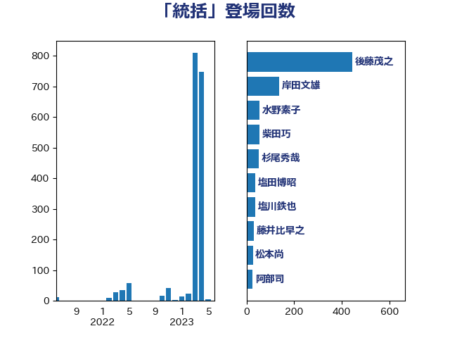

単語「統括」

| 後藤茂之 | 自由民主党 | 444 回 |
| 岸田文雄 | 自由民主党 | 138 回 |
| 水野素子 | 立憲民主党 | 54 回 |
| 柴田巧 | 日本維新の会 | 54 回 |
| 杉尾秀哉 | 立憲民主党 | 53 回 |
| 塩田博昭 | 公明党 | 37 回 |
| 塩川鉄也 | 日本共産党 | 36 回 |
| 藤井比早之 | 自由民主党 | 30 回 |
| 松本尚 | 自由民主党 | 27 回 |
| 阿部司 | 日本維新の会 | 26 回 |
| 太栄志 | 立憲民主党 | 25 回 |
| 大島九州男 | れいわ新選組 | 25 回 |
| 本庄知史 | 立憲民主党 | 22 回 |
| 浅野哲 | 国民民主党 | 20 回 |
| 早稲田ゆき | 立憲民主党 | 18 回 |
| 田村まみ | 国民民主党 | 17 回 |
| 友納理緒 | 自由民主党 | 17 回 |
| 緒方林太郎 | 無所属 | 16 回 |
| 青柳陽一郎 | 立憲民主党 | 15 回 |
| 鈴木英敬 | 自由民主党 | 15 回 |
| 三浦信祐 | 公明党 | 15 回 |
| 大串博志 | 立憲民主党 | 13 回 |
| 中谷一馬 | 立憲民主党 | 13 回 |
| 土田慎 | 自由民主党 | 12 回 |
| 加藤勝信 | 自由民主党 | 12 回 |
| 磯崎仁彦 | 自由民主党 | 11 回 |
| 吉田統彦 | 立憲民主党 | 11 回 |
| 高橋千鶴子 | 日本共産党 | 10 回 |
| 堀内詔子 | 自由民主党 | 10 回 |
| 上田清司 | 国民民主党 | 10 回 |
| 本田太郎 | 自由民主党 | 9 回 |
| 仁木博文 | 無所属 | 9 回 |
| 福重隆浩 | 公明党 | 8 回 |
| 山岸一生 | 立憲民主党 | 8 回 |
| 小西洋之 | 立憲民主党 | 8 回 |
| 大石あきこ | れいわ新選組 | 8 回 |
| 國重徹 | 公明党 | 8 回 |
| 田中健 | 国民民主党 | 7 回 |
| 河西宏一 | 公明党 | 7 回 |
| 斉藤鉄夫 | 公明党 | 7 回 |
| 川田龍平 | 立憲民主党 | 7 回 |
| 遠藤良太 | 日本維新の会 | 6 回 |
| 福島伸享 | 無所属 | 6 回 |
| 森屋宏 | 自由民主党 | 6 回 |
| 井上哲士 | 日本共産党 | 6 回 |
| 高木かおり | 日本維新の会 | 5 回 |
| 神谷政幸 | 自由民主党 | 5 回 |
| 牧島かれん | 自由民主党 | 5 回 |
| 宮路拓馬 | 自由民主党 | 5 回 |
| 伊佐進一 | 公明党 | 5 回 |
| 西村明宏 | 自由民主党 | 4 回 |
| 稲富修二 | 立憲民主党 | 4 回 |
| 岩谷良平 | 日本維新の会 | 4 回 |
| 小沼巧 | 立憲民主党 | 4 回 |
| 三宅伸吾 | 自由民主党 | 4 回 |
| 阿部知子 | 立憲民主党 | 3 回 |
| 長友慎治 | 国民民主党 | 3 回 |
| 石原宏高 | 自由民主党 | 3 回 |
| 松野明美 | 日本維新の会 | 3 回 |
| 松野博一 | 自由民主党 | 3 回 |
| 本田顕子 | 自由民主党 | 3 回 |
| 吉田久美子 | 公明党 | 3 回 |
| 古屋範子 | 公明党 | 3 回 |
| 佐藤英道 | 公明党 | 3 回 |
| 伊藤渉 | 公明党 | 3 回 |
| 上月良祐 | 自由民主党 | 3 回 |
| 馬淵澄夫 | 立憲民主党 | 2 回 |
| 青柳仁士 | 日本維新の会 | 2 回 |
| 鈴木義弘 | 国民民主党 | 2 回 |
| 野田聖子 | 自由民主党 | 2 回 |
| 谷田川元 | 立憲民主党 | 2 回 |
| 西田実仁 | 公明党 | 2 回 |
| 西岡秀子 | 国民民主党 | 2 回 |
| 藤丸敏 | 自由民主党 | 2 回 |
| 若宮健嗣 | 自由民主党 | 2 回 |
| 米山隆一 | 立憲民主党 | 2 回 |
| 田村憲久 | 自由民主党 | 2 回 |
| 浦野靖人 | 日本維新の会 | 2 回 |
| 浜田靖一 | 自由民主党 | 2 回 |
| 松本剛明 | 自由民主党 | 2 回 |
| 松原仁 | 立憲民主党 | 2 回 |
| 末松義規 | 立憲民主党 | 2 回 |
| 星北斗 | 自由民主党 | 2 回 |
| 徳永エリ | 立憲民主党 | 2 回 |
| 山際大志郎 | 自由民主党 | 2 回 |
| 小熊慎司 | 立憲民主党 | 2 回 |
| 小林鷹之 | 自由民主党 | 2 回 |
| 宮本岳志 | 日本共産党 | 2 回 |
| 天畠大輔 | れいわ新選組 | 2 回 |
| 中田宏 | 自由民主党 | 2 回 |
| 高橋英明 | 日本維新の会 | 1 回 |
| 音喜多駿 | 日本維新の会 | 1 回 |
| 阿部弘樹 | 日本維新の会 | 1 回 |
| 鈴木敦 | 国民民主党 | 1 回 |
| 鈴木宗男 | 日本維新の会 | 1 回 |
| 野田国義 | 立憲民主党 | 1 回 |
| 足立敏之 | 自由民主党 | 1 回 |
| 赤池誠章 | 自由民主党 | 1 回 |
| 谷公一 | 自由民主党 | 1 回 |
| 西銘恒三郎 | 自由民主党 | 1 回 |
| 藤田文武 | 日本維新の会 | 1 回 |
| 藤木眞也 | 自由民主党 | 1 回 |
| 萩生田光一 | 自由民主党 | 1 回 |
| 舟山康江 | 国民民主党 | 1 回 |
| 石井啓一 | 公明党 | 1 回 |
| 白石洋一 | 立憲民主党 | 1 回 |
| 田野瀬太道 | 無所属 | 1 回 |
| 田島麻衣子 | 立憲民主党 | 1 回 |
| 浅川義治 | 日本維新の会 | 1 回 |
| 河野太郎 | 自由民主党 | 1 回 |
| 沢田良 | 日本維新の会 | 1 回 |
| 池畑浩太朗 | 日本維新の会 | 1 回 |
| 永岡桂子 | 自由民主党 | 1 回 |
| 橋本岳 | 自由民主党 | 1 回 |
| 森田俊和 | 立憲民主党 | 1 回 |
| 柳ヶ瀬裕文 | 日本維新の会 | 1 回 |
| 枝野幸男 | 立憲民主党 | 1 回 |
| 掘井健智 | 日本維新の会 | 1 回 |
| 平木大作 | 公明党 | 1 回 |
| 山田宏 | 自由民主党 | 1 回 |
| 山本博司 | 公明党 | 1 回 |
| 小野田紀美 | 自由民主党 | 1 回 |
| 小池晃 | 日本共産党 | 1 回 |
| 小倉將信 | 自由民主党 | 1 回 |
| 奥野総一郎 | 立憲民主党 | 1 回 |
| 大西英男 | 自由民主党 | 1 回 |
| 大家敏志 | 自由民主党 | 1 回 |
| 堀場幸子 | 日本維新の会 | 1 回 |
| 吉田とも代 | 日本維新の会 | 1 回 |
| 北神圭朗 | 無所属 | 1 回 |
| 伊藤俊輔 | 立憲民主党 | 1 回 |
| 伊東信久 | 日本維新の会 | 1 回 |
| 井坂信彦 | 立憲民主党 | 1 回 |
| 丸川珠代 | 自由民主党 | 1 回 |
| 中川康洋 | 公明党 | 1 回 |
| 三木圭恵 | 日本維新の会 | 1 回 |
| 一谷勇一郎 | 日本維新の会 | 1 回 |
| たがや亮 | れいわ新選組 | 1 回 |